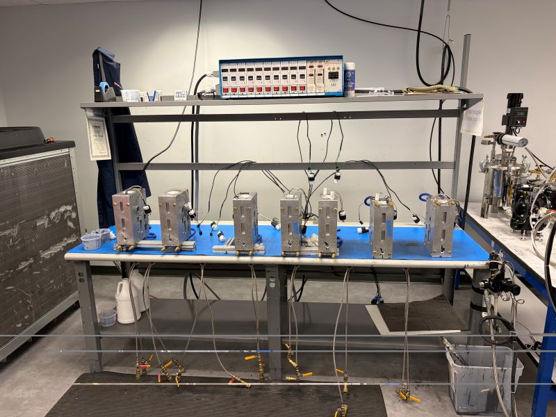
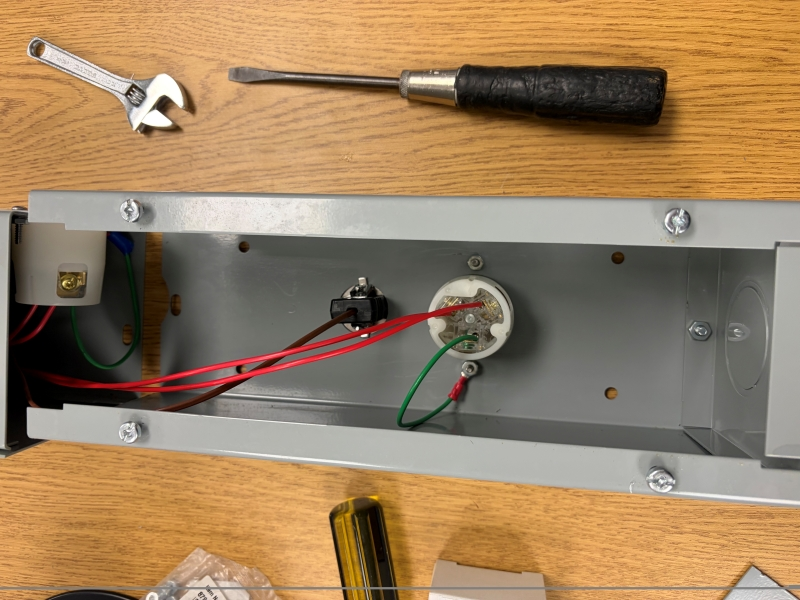

← Projects / Project 01
A redesigned power distribution system for a low-pressure molding station, replacing failure-prone free-hanging wiring with an organized, protected raceway layout.

Downtime after the redesign
Concurrent molding capacity
Molds to stations — station uptime limits output
Nearly all failures moved to swappable thermocouples
Failures were split between heating cartridges and thermocouples, and station-side wiring was hard to reach. With 16 molds for 8 stations, a bad mold could be benched — a bad station killed concurrent run time.
Raceway with elevated wiring, standardized braid-protected heating cartridges ready to swap in immediately, larger thermocouples, correctly specced connectors that draw less power, and coolant manifolds.
Station-side failures designed out and nearly all failures shifted to quick-swap thermocouples — downtime reduced to zero. Lower power draw from the new connectors raised concurrent molding capacity 25%.
The low-pressure molding line ran 16 molds across 8 stations, and it experienced frequent hardware failures. Those failures were split between the heating cartridges and the thermocouples. The heating cartridges had to be modified before they could be used and tended to stay stuck in the molds, so every cartridge failure meant downtime until the old cartridge could be removed and a new one prepped and inserted.
Station-side failures were an even bigger problem. The free-hanging wiring was very hard to access and replace, so a station-side issue caused even more downtime. And because there were twice as many molds as stations, a failed mold could simply be left out of the run — but a failed station cut into concurrent run time.
I redesigned the station's power distribution system around a raceway-style layout, replacing the free-hanging wiring with an organized and protected system. The raceway protects the station-side wiring and elevates it away from the heated molds to prevent heat damage and fraying, while making electrical components easier to reach during maintenance. I also replaced the PVC coolant system they were using previously with manifolds to decrease coolant leakage.
I selected and integrated off-the-shelf components with custom-designed parts to improve the durability and functionality of the station. I worked with suppliers to standardize the heating cartridges — custom cartridges with stainless-steel braid protection that need no modification, so a failed one can be replaced immediately. I also upgraded to larger, more robust thermocouples that are less prone to damage than the originals, and replaced incorrectly specced electrical plugs with connectors correctly matched to the station's voltage requirements. The correctly specced connectors draw less power, which let more molds run at the same time. I coordinated with station operators to make sure my design decisions made daily operation as easy as possible, and I 3D printed custom brackets for the raceway and manifolds, manually machined components, and wired and assembled the raceway myself.
The result shifted almost all failures onto the thermocouples, which can be quick-swapped. With station-side failures designed out and cartridges ready to drop in, downtime was eliminated, and the lower power draw from the correctly specced connectors raised concurrent molding capacity by 25%.
